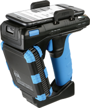
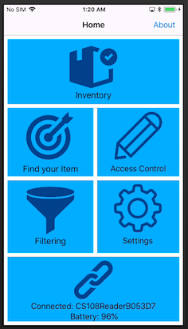

CS108iOSClient Reference
CS108iOSClient Reference
CslCs108iOsApp

Library and demo app for Convergence Systems Limited CS108 UHF RFID handheld reader written in Objective-C



Development Environment
- XCode 9
- iOS 11
- Tested on iPhone 8 (optimized for 4.7" but functional on all screen sizes)
Initial version: 1.0.1 (tested against Bluetooth FW 1.0.11, RFID FW 2.6.14, SiliconLab FW 1.0.9)
- Developed the communication and packet exchange over BLE for device discovery, connection and configurations
- Created three parallel workstreams for the basic operations: (1) Collecting notifications over the Characterister ID 9901 and put data into a buffer (2) decode the incoming notifications and packetize the data. All packets being stored in a circular buffer (3) User application and interactions
- Prioritize the BLE interface class at the Global Central Dispatch queues so that the BLE communication is on the separate high priority queue and running on a separate thread in the background. The UI and main program would be running on the main thread. Tag reading to the buffer is on its own thread
- EnableTag inventory in compact mode.
- Duplicate elimination in inventory mode. Tested against 1000 tag read
- UI for reader selection, connection and tag inventory listing
Version 1.2.412
- Migrated the code from the application to API level for reader management, configuration and tag inventory
- New reader selection screen for improving reader selection when there are multiple readers at the scene
- Defined antenna dwell time to be zero for CS108 API
- Moved all the API calls to sync mode. Only inventory is running async and all other call are running synchronously in the foreground
- Created new page for reader settings and configurations (power, algorithm, link profile, etc).
- Improved robustness in the process of starting/stopping inventory
- Created a new page for tag inventory
- Corrected tag read rate including unique tag rate and general tag rate. Revised the time window (per second) so that we get a more stable number on the current read rate
Version 1.3.630
- Implemented battery level reporting
- Power configuration with a revised range
- Fixes on EPC handing and enhanced stability
- Barcode reading functions under inventory page, with swipe to change mode
Version 1.3.737
- Included inline documentation on the header files and files under /docs folder
- Added logic to power off RFID and barcode module when application terminates
- Put in additional icons for all required device (iPhone, iPad)
- Changed app name to a short name CS108ObjC